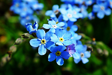
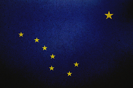
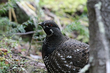

 Scorpion grasses, or Forget-Me-Nots, bloom in true blue, light pink, purple, or white
State Flag
 A dark blue background with 8 stars forming the Big Dipper & Polaris
State Bird
 The Willow ptarmigan became the state bird in 1955.
State Capital
Juneau, AK the 2nd largest city, is at the foot of Mt. Juneau
Dumb Laws
- It is illegal to push a live moose out of a moving airplane.
- In Fairbanks, moose are not allowed to reproduce on city streets.
- It is illegal to wake a sleeping bear for the purposes of taking a picture